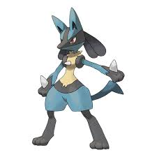

Greninja, al igual que su evolución anterior, tiene el cuerpo de una rana. En esta forma, ahora se parece a Toxicroak y ha adquirido la apariencia de un ninja. Es de color azul oscuro y tiene la lengua envuelta alrededor del cuello como una bufanda en lugar de las burbujas que se encuentran en Froakie y Frogadier.
Lucario es un Pokémon introducido en la cuarta generación de los videojuegos de Pokémon (en Pokémon Diamante y Perla). Es conocido por su apariencia similar a un lobo o un chacal antropomorfo, y es uno de los Pokémon más populares debido a su diseño estilizado y habilidades.

Zeraora es un Pokémon felino bípedo, parecido a un tigre. Tiene un pelaje predominantemente amarillo con diseños de rayos negros, que cubren su cabeza, brazos y parte de sus piernas. También tiene pelaje negro en su cara. Tiene rayos azules por bigotes y una púa azul en el centro de su frente. La púa azul en su frente se convierte en una especie de cuerno central electrificado cuando ataca con rayos. Zeraora no tiene cola, pero tiene un pelaje largo, parecido a una cola, entre sus hombros en su espalda que toma la forma de un rayo. Las almohadillas de sus patas son azules y sus pies son negros con tres garras.